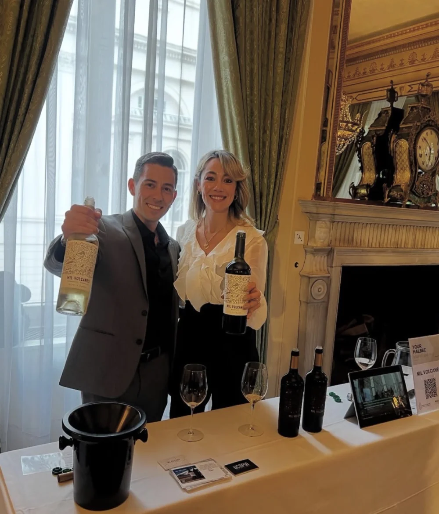
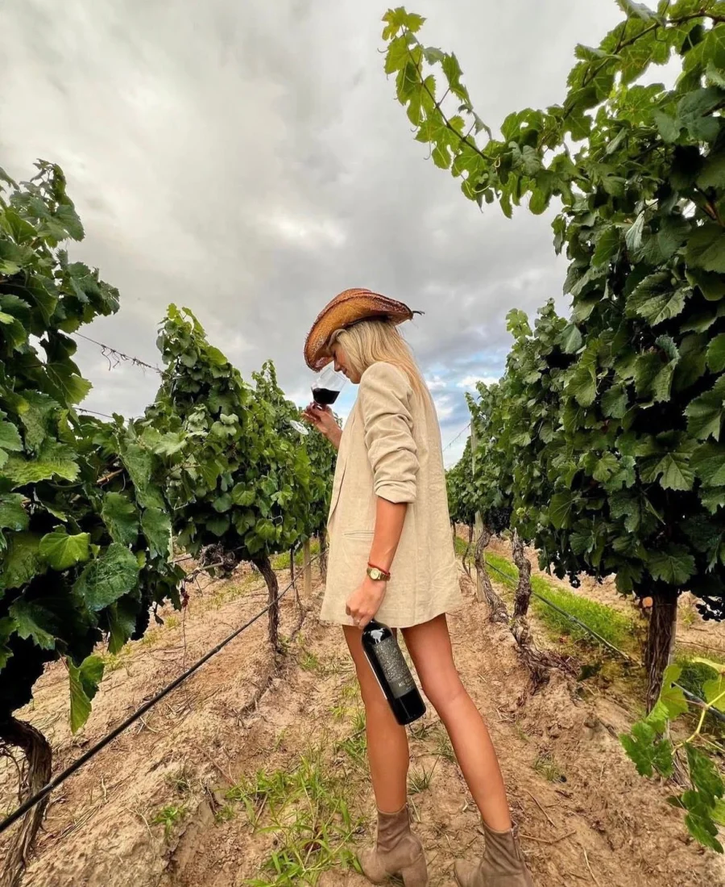

Somos Mil Volcanes
Espíritu libre, entusiasta y soñador.
Nos mueve la energía de la naturaleza.


De espíritu libre, entusiastas, emprendedores y soñadores, así creamos Mil Volcanes: un proyecto familiar y exportador que nació de más de diez años de estudio, trabajo, pasión y perseverancia.
Nuestro objetivo fue desarrollar una línea exclusiva de vinos premium, auténtica, única y fresca, llena de magia volcánica, que invita a descubrir la Reserva Natural La Payunia, en el sur de Mendoza.
Nuestros vinos reflejan el trabajo integral en equipo, la búsqueda de sofisticación y la fiel expresión de nuestro maravilloso terroir: Mendoza.